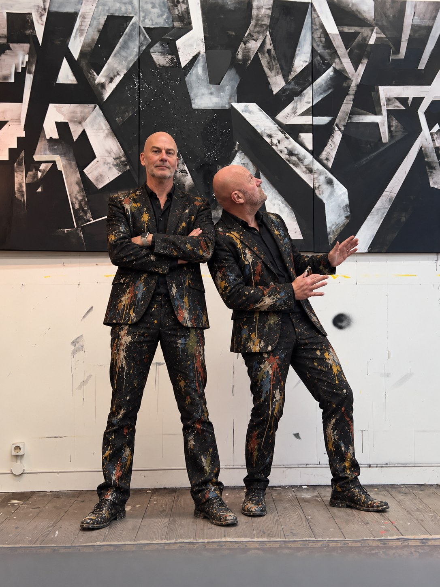

VlaarWessels
art & animation

Marcus Vlaar en Hans Wessels werden boezemvrienden op de kunstacademie en verwierven cultstatus met hun subversieve animatieserie Purno de Purno, die generaties kijkers even verward als vrolijk achterliet. Purno de Purno werd van 1991 tot 2006 uitgezonden in VPRO's Villa Achterwerk.
VlaarWessels verdienden hun sporen in allerlei creatieve sectoren: kunst, animatie, film, games. Inmiddels maken ze samen weer schilderijen en animaties, nog steeds met dezelfde zin voor spel, verwarring en ontregeling.